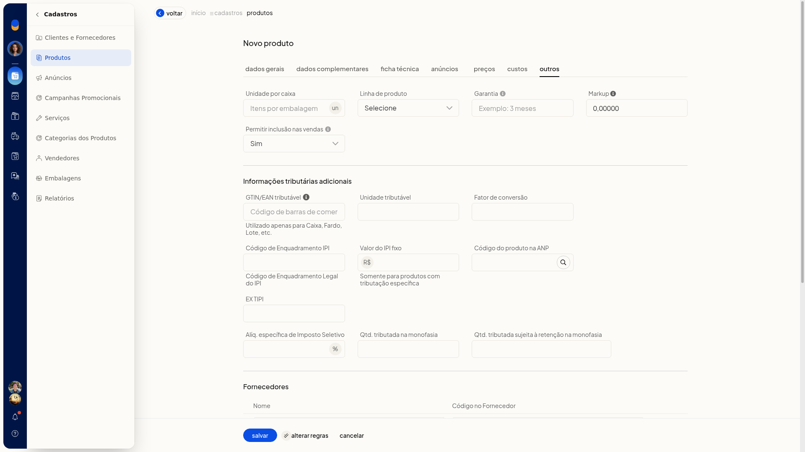
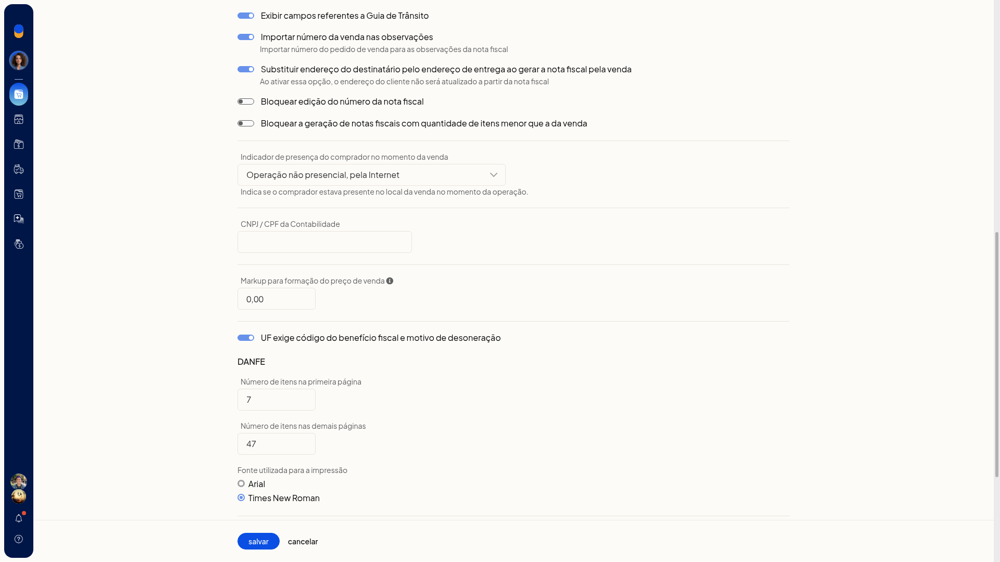

Formação de preço e markup
A formação de preço no ERP da Olist usa o markup do produto. Se esse markup estiver zerado, o ERP usa o markup geral da nota fiscal.
Você informa a alíquota no cadastro do produto e define o markup geral para os produtos sem markup individual.
Importante
- A alíquota do Markup entra na formação de preço.
- Com o Markup do produto em zero, a formação de preço usa o markup geral.
Instruções
-
Acesse Cadastros > Produtos > Incluir produto.
-
Abra a aba Outros e localize Markup.

-
Informe a alíquota em percentual, com vírgula. O campo não é obrigatório.
-
Acesse Configurações > Configurações ERP e busque markup.
-
Abra Markup para formação do preço de venda, em Vendas > Configuração da Nota Fiscal Eletrônica, e expanda as configurações adicionais.

-
Informe a alíquota geral. O campo não é obrigatório. Esta alíquota será considerada na formação de preço dos produtos sem markup individual informado.
Resultado
O produto usa o markup individual. Os produtos sem markup próprio usam o markup geral da nota fiscal.